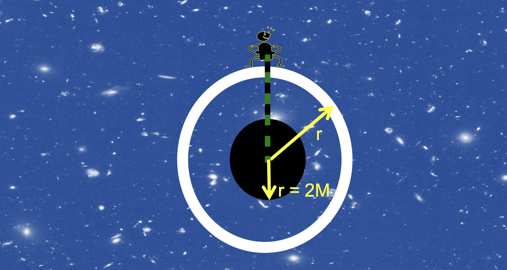

Forrige side🙂 🙁3 observatørerPADLET

Før vi skal se nærmere på de 3 observatørene trenger vi å se nærmere på posisjonskoordinatet r i uttrykket for Δs. Hvordan vil f.eks. skallobservatøren måle hvilken avstand r hun har fra sentrum? I figuren ser vi en skallobservatør på et skall omkring et sort hull (lenger vekk enn r = 2M vel og merke!). Hun prøver å heise en meterstav (grønn-sort) ned i det sorte hullet for å måle avstanden til sentrum. Hvordan tror du det går?